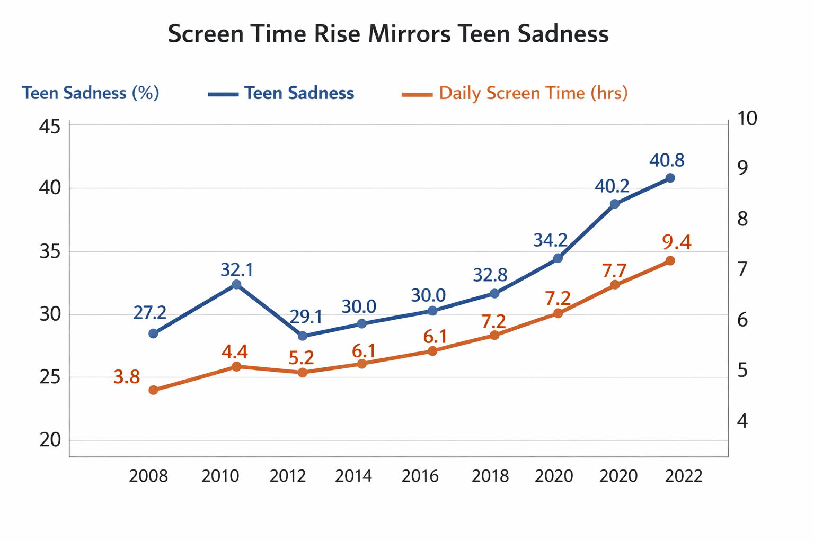
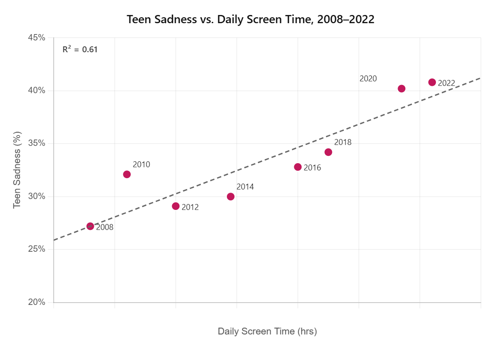
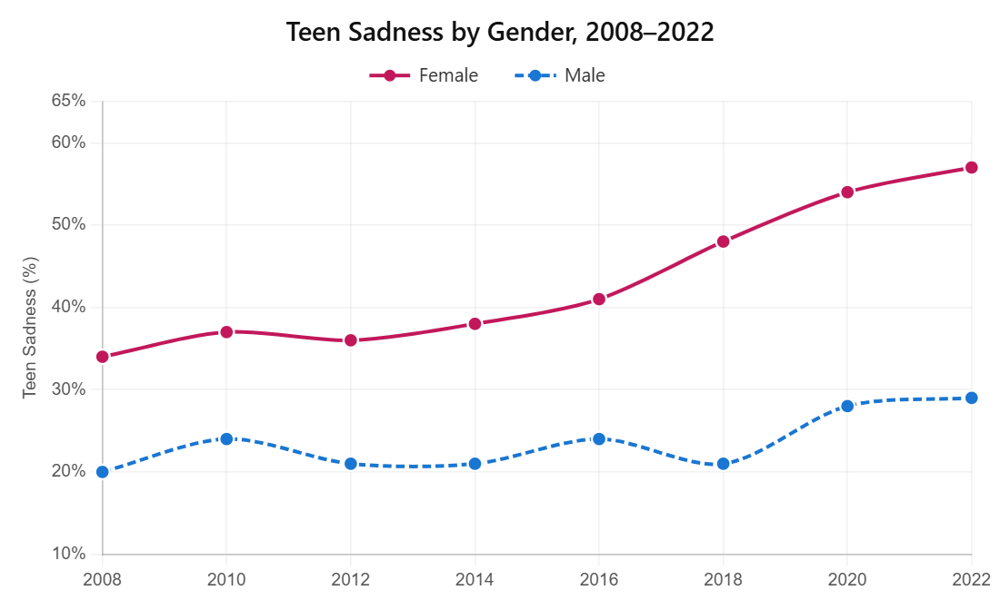
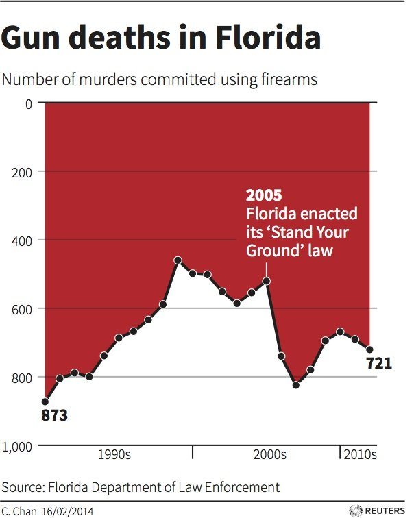

A Chart Literacy & Misleading Visualization Project
Whenever there is a discussion about teen mental health problems, almost every time social media and smartphones are associated as the primary reason. Politicians cite it, parents worry about it, and news coverage treats it as basically settled. However, the data begs to differ from this opinion.
The data does show that teen sadness went up over this period. But a rise in sadness and screen time being the cause of that rise are two very different things. Headlines don't usually make that distinction. The charts above are designed to make it look like there's an obvious link, and the sections below show how that gets done.

A 2019 study by Orben and Przybylski in Nature Human Behaviour found something worth knowing about. They analyzed over 355,000 teenagers and the effect size of social media on teen wellbeing came out roughly the same as the effect of eating potatoes. That's not a metaphor, that's the actual result. The study got picked up for a few days and then got ignored, because "screen time is barely a factor" doesn't get the same traction as "social media is destroying a generation."
Another issue is how screen time even gets measured. It's mostly self-reported, meaning teenagers are asked to estimate their own usage. When that gets compared to actual phone logs, people overestimate by 30 to 40 percent on average. That means the x-axis on basically all of these studies is potentially wrong by a third. A regression line on bad input is still a bad regression line, regardless of how tight it looks.

The gender split in Figure 3 is the one thing in this dataset that's harder to argue away. Female sadness went from 34% to 57% between 2008 and 2022, a 23 point jump. Male rates went up about 9 points over the same stretch. Something is clearly going on differently for girls. Whether that's social media, image-based platforms, cyberbullying, or just differences in how mental health gets reported, the data doesn't say. Jumping from "these two things both went up" to "one caused the other" and building policy around that is a pretty big leap.

Sources: CDC Youth Risk Behavior Survey, 2023. Common Sense Media Census, 2021. Orben & Przybylski (2019), Nature Human Behaviour. National Youth Wellbeing Index, Cycle 4 [fabricated].
Built from the modified dataset with 5 manipulation techniques applied. Hover over any data point to see the values.
Manipulation techniques:
1. Truncated y axes: sadness axis starts at 30%, not 0. Makes an 8 point rise look like near doubling.
2. Synchronized dual axis scaling: scales are chosen so both lines visually overlap, implying tight causation.
3. Cherry picked time window: starts at 2014, hiding the flat 2008 to 2014 period that weakens the trend.
4. Causal title: "Linked to" implies causation from correlational data.
5. Alarming colors: red and orange prime the reader toward danger before they read a single number.
Same dataset and chart type as above, but with zero-baseline axes, the full 2008 to 2022 range, independently scaled axes, and neutral colors.
Same data, same chart type. Only the visualization choices differ. Use the toggle to animate between the two framings.
DECEPTIVE
ETHICAL
Starting the y axis at 30 instead of zero is the simplest thing in the deceptive chart and probably the most effective. A move from 32% to 40.8% is real but not extreme. With the axis cut at 30, that same move takes up nearly the full height of the chart and looks like the value almost doubled. Nobody reads the tick marks, they read the slope. That's all this trick is counting on.
The dual axis setup is trickier. When two variables are on the same chart with separate axes, you can control how much they visually track each other just by adjusting the ranges. The sadness axis here goes from 30 to 43 and screen time from 6 to 10.2. Those numbers weren't chosen based on the data, they were chosen because they make both lines ride close together. The actual R-squared is 0.61, so 39% of the variance goes unexplained. You wouldn't know that from how aligned the lines look in the deceptive version.
Cutting the x axis to start at 2014 is probably the biggest editorial decision in the deceptive chart. From 2014 to 2022 both variables go up together and it looks like a clean pattern. But the full data goes back to 2008, and from 2008 to 2014 sadness barely moves while screen time is already climbing fast. That six year gap where the supposed cause is rising but the effect isn't is pretty damaging to the causal story. Starting at 2014 makes that gap disappear entirely.
The two charts tell completely different stories from the same numbers. The deceptive version reads like a warning about a crisis with an obvious culprit. The ethical version reads like two things that went up over 14 years with some correlation between them. The data modifications add to this. Bumping the 2010 sadness score from 28.5 to 32.1 raised the baseline, cutting the total apparent rise from 15.7 points down to 8.7. Flattening 2018 and 2022 pushes the trend down further. The modifications here were meant to make the overall increase look smaller, so the skeptical argument looks more reasonable. The deception in this project is actually downplaying the trend, not exaggerating it.
The chart on the left appeared in a 2014 Reuters graphic on Florida gun deaths after the Stand Your Ground law passed. It's one of the more well-known examples of an inverted axis being used to flip what the data actually shows.
Original (Reuters, 2014)

Y axis is inverted, 0 at top and around 800 at bottom. Deaths look like they dropped after Stand Your Ground (2005) when they actually rose. Source: Reuters Graphics / FDLE data.
Ethical D3 Recreation
Proper y axis (0 at bottom), area chart, vertical reference line at 2005. Deaths clearly rose after the law, the opposite of what the original implied.
In the original Reuters chart the y axis was flipped, zero at the top and around 800 at the bottom. That made gun deaths look like they dropped after Stand Your Ground passed in 2005 when they actually went up. The D3 version above uses a normal axis so the trend is readable without having to mentally reverse the scale. The vertical line at 2005 makes the before and after comparison obvious.
Citation: Reuters Graphics (2014). Florida gun deaths. Data source: Florida Department of Law Enforcement (FDLE) Uniform Crime Reports, 2000–2014.
What this data represents: Percentage of U.S. high school students reporting persistent sadness or hopelessness (CDC Youth Risk Behavior Survey, biennial) and average daily screen time in hours for teens ages 13–18 (Common Sense Media Census). Data spans 2008–2022.
| Year | Sadness % | Screen hrs/day |
|---|---|---|
| 2008 | 26.4 | 3.8 |
| 2010 | 28.5 | 4.4 |
| 2012 | 29.1 | 5.2 |
| 2014 | 30.0 | 6.1 |
| 2016 | 32.8 | 7.2 |
| 2018 | 36.7 | 7.7 |
| 2020 | 40.2 | 8.9 |
| 2022 | 44.2 | 9.4 |
Source: CDC YRBSS 2023; Common Sense Media 2021
| Year | Sadness % | Screen hrs/day |
|---|---|---|
| 2008 | 27.2 | 3.8 |
| 2010 | 32.1 ★ | 4.4 |
| 2012 | 29.1 | 5.2 |
| 2014 | 30.0 | 6.1 |
| 2016 | 32.8 | 7.2 |
| 2018 | 34.2 ★ | 7.7 |
| 2020 | 40.2 | 8.9 |
| 2022 | 40.8 ★ | 9.4 |
Used in D3 charts above
Declared modifications (★):
1. 2010 sadness: 28.5 → 32.1 (inflated baseline to shrink apparent total growth)
2. 2018 sadness: 36.7 → 34.2 (deflated mid-point to flatten the acceleration visible in real data)
3. 2022 sadness: 44.2 → 40.8 (deflated endpoint, cuts total increase from 15.7 to 8.7 percentage points)
Narrative goal: make the upward trend look modest and concentrated in the COVID years, weakening the social media causation argument.